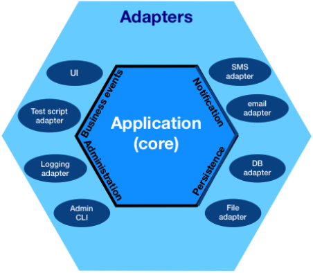

CakePHP Fixture Factories
Test DB Cleaner
Juan Pablo Ramirez - Nicolas Masson
Test Driven Developers

PHP developer at Passbolt
PHP developer at [B]-projects

Based in Luxembourg
Open source password manager
Installable on any Linux server + hosted on cloud
Based on OpenGPG
Collaborative
RESTFull API
Built in CakePHP
TDD oriented
Test database
3 steps
Schema creation
Cleanup
Test Fixtures
- Testing overview
- CakePHP's native ORM
- CakePHP Fixture Factories
- Trigger-based Database Cleaning
Tests
End to end
Feature: User permission
Background:
Given I create a user with id 504
Scenario:
Given I log in with permission 'Users'
When I call get 'users/view/504'
Then I shall be granted access.
Scenario:
Given I log in with permission 'Admin'
When I call get 'users/view/504'
Then I shall be granted access.
Scenario:
Given I log in with permission 'Foo'
When I call get 'users/view/504'
Then I shall be redirected.
Integration

Includes all DB interactions
Unit
public function testUserPermission()
{
// Arrange
$user = UserFactory::make()->withPermission('Foo')->getEntity();
// Act
$act = $this->Users->hasPermission($user, 'Foo');
// Assert
$this->assertTrue($act);
}
Unit
public function dataProvider()
{
return [
['Admin', true],
['Guru', true],
['Foo', true],
['Bar', false],
];
}
/** @dataProvider dataProvider */
public function testUserHasPermissionFoo(
string $perm,
bool $expect
)
{
$user = UserFactory::make()->withPermission($perm)->getEntity();
$act = $this->Users->hasPermission($user, 'Foo');
$this->assertSame($expect, $act);
}
Tests should be
Readable 
Easy to write
Run fast
Why test?
-
Development tool
-
Clean code
-
Documentation
-
Code integrity
-
Saves time
CakePHP's native ORM
namespace App\Model\Table;
use Cake\ORM\Table;
class UsersTable extends Table
{
public function initialize(array $config): void
{
$this->belongsToMany('UsersGroups');
}
}
namespace App\Model\Table;
use Cake\ORM\Table;
class UsersGroupsTable extends Table
{
public function initialize(array $config): void
{
$this
->belongsToMany('Users')
->belongsToMany('Permissions');
}
}
namespace App\Model\Table;
use Cake\ORM\Table;
class PermissionsTable extends Table
{
public function initialize(array $config): void
{
$this->belongsToMany('UsersGroups');
}
}
// Retrieve all users, join permissions
$users = $this->Users->find()
->contain('UsersGroups.Permissions')
->toArray();
// Filter users by permissions, join permissions
$admins = $this->Users->find()
->matching('UsersGroups.Permissions', function ($q) {
return $q->where(['Permissions.name' => 'Admin')
})
->toArray();
// With Database access
public function hasPermission(int $userId, string $perm): bool
{
return $this->Users->find()
->innerJoinWith('UsersGroups.Permissions', function ($q) use ($perm) {
return $q->where(['Permissions.name' => $perm)
})
->where(['Users.id' => $userId])
->count() > 0;
}
// Without Database access
public function hasPermission(User $user, string $perm): bool
{
return in_array(
$perm,
Hash::extract($user, 'users_groups.{n}.permissions.{n}.name')
)
}
CakePHP Fixture Factories
App\Test\Factory\UserFactory.php
protected function getRootTableRegistryName(): string
{
return 'Users';
}
protected function setDefaultTemplate(): void
{
$this->setDefaultData(function(Generator $faker) {
return [
'username' => $faker->username,
'email' => $faker->email,
];
});
}
$user = UserFactory::make()->getEntity();
UserFactory::make(4)->getEntities();
UserFactory::make(4)->persist();
UserFactory::make(['username' => 'Foo'])->persist();
UserFactory::make([
['username' => 'Foo'],
['username' => 'Bar'],
])->persist();
UserFactory::make(3)
->with('UsersGroups.Permissions', ['name' => 'Foo'])
->getEntity();
UserFactory::make()
->with('UsersGroups.Permissions', [
['name' => 'Foo'],
['name' => 'Bar'],
])
->getEntity();
UserFactory::make()
->withPermission('Foo')
->getEntity();
Unit test
public function testUserPermission()
{
// Arrange
$user = UserFactory::make()
->with('UsersGroups.Permissions', ['name' => 'Foo'])
->getEntity();
// Act
$act = $this->Users->hasPermission($user, 'Foo');
// Assert
$this->assertTrue($act);
}
Unit tests
public function dataProviderForTestPermission()
{
return [['Admin',true],['Guru',true],['Foo',true],['Bar',false]];
}
/** @dataProvider dataProviderForTestPermission */
public function testPermission(string $p, bool $exp)
{
$user = UserFactory::make()->withPermission($p)->getEntity();
$act = $this->Users->hasPermission($user, 'Foo');
$this->assertSame($exp, $act);
}
Behavioral test
Feature: User permission
Background:
Given I create a user with id 504
Scenario:
Given I log in with permission 'Users'
When I call get 'users/view/504'
Then I shall be granted access.
Scenario:
Given I log in with permission 'Admin'
When I call get 'users/view/504'
Then I shall be granted access.
Scenario:
Given I log in with permission 'Guru'
When I call get 'users/view/504'
Then I shall be granted access.
Scenario:
Given I log in with permission 'Foo'
When I call get 'users/view/504'
Then I shall be redirected.
Persisting costs
Time (Y axis) vs Number of tests (X axis)
CakePHP Fixture Factories
Default template
Association builder
Persist or not
Random Ids
DB cleaning
DB cleaning with transactions
Test suite starts
Truncate all tables
Load test dump
Run migrations
~ seconds
Start test
Start SQL transaction
Run test
Rollback transaction
DB cleaning with triggers
Test suite starts

Run migrations if needed only
CREATE TABLE IF NOT EXISTS dirty_tables_collector (table_name VARCHAR(128) PRIMARY KEY);
CREATE TRIGGER table_users_trigger AFTER INSERT ON `users`
FOR EACH ROW
INSERT IGNORE INTO dirty_table_collector (table_name)
VALUES ('dirty_tables_collector'), ('users');
Truncate dirty tables in SQL 1 procedure
Run test
Query your test DB
https://github.com/vierge-noire/test-database-cleaner
Fast: no warm up
Robust: no transactions
TDD friendly: data remains persisted
MySQL, Postgres, SQL Server, Sqlite + contributions
CakePHP, Laravel + contributions
Feel free to join the project!
Conclusion
Build fast with CakePHP
Grow solid with the Fixture Factories
Join us to improve trigger-based database cleaner
Credits: Juan Pablo Ramirez - Nicolas Masson